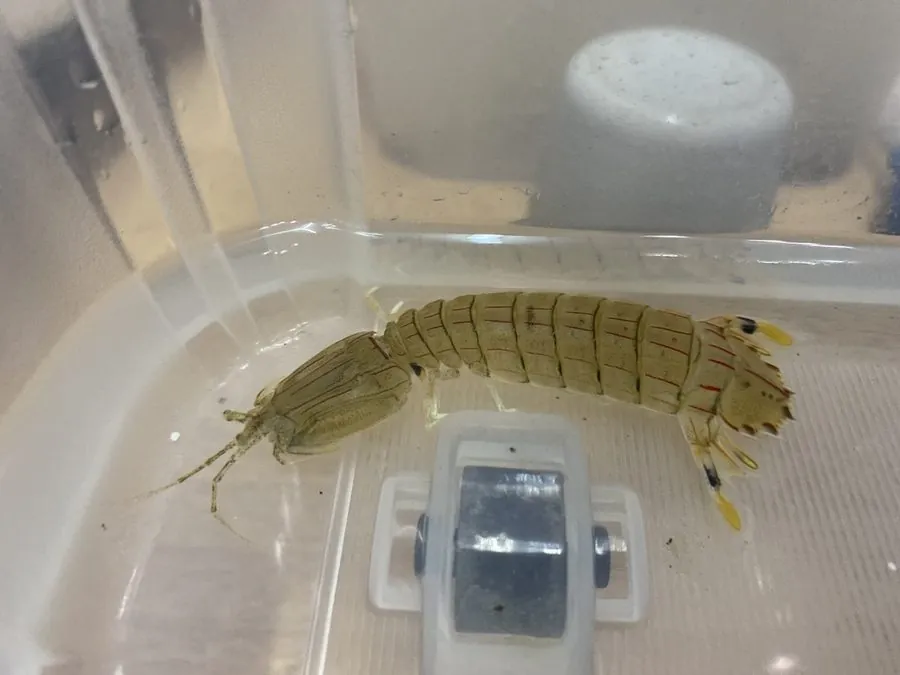

甲壳动物 · 动物界
口虾蛄 Oratosquilla oratoria

俗称皮皮虾的底栖甲壳动物，第二对颚足特化为带刺的矛状捕捉足，攻击速度极快，视觉系统也很发达。
- 分类
- 门节肢动物门纲软甲纲目口足目科虾蛄科属口虾蛄属
- 栖息环境
- 潮间带至浅海的沙泥底，挖掘洞穴栖息
- 地理分布
- 西太平洋沿岸，包括中国、日本、朝鲜半岛和东南亚
- 保护级别
- 暂无评估
物种志
口虾蛄体长 10–15 cm，身体背腹扁平，分节明显，尾节有锐刺，尾肢与尾节组成宽大的尾扇；第二对颚足特化为镰刀状、带刺的捕捉足，可以像弹簧一样迅速弹出。体色浅灰褐，带斑纹。
它生活在潮间带至浅海的沙泥底，挖掘 U 形洞穴并在洞口守候，伏击经过的小鱼、虾、蟹和贝类。口虾蛄的攻击只需几毫秒，是动物界最快的攻击之一；复眼结构复杂，能感知多种颜色和偏振光。它有较强领域性，同类之间常发生激烈争斗。春季产卵，雌虾抱卵，幼体浮游一段时间后沉底定居。口虾蛄分布在西太平洋沿岸，包括中国沿海、日本、朝鲜半岛和东南亚，是中国沿海常见的食用虾类，俗称皮皮虾。
形态与习性
- 食性捕食小鱼、虾蟹和贝类，伏击取食
- 体长约 10–15 cm
- 武器第二对颚足为带刺的矛状捕捉足
- 洞穴在沙泥底挖 U 形洞穴，常守洞口伏击
- 视觉复眼结构复杂，能感知多种颜色和偏振光
- 经济中国沿海常见食用虾类，俗称皮皮虾
趣味知识
- 口虾蛄攻击猎物只需几毫秒，是动物界最快的攻击之一。
- 它的复眼能识别偏振光，这种能力在动物中很罕见。
- 虾蛄在洞穴里守株待兔，等小鱼经过时猛然刺出捕捉足。